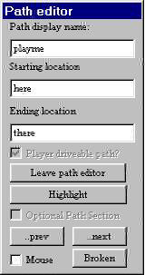

Launch the Editor, Select Activity Editor, and like most Windows applications you get a window. Select "file, new", and select the route you just created or downloaded. Type a name for the activity in the box, and before you save drag the cursor to highlight the name, so it looks like this:
Now hold down the CTRL key and hit C. This copies the word into the windows clipboard - no, idiot, you can't see it unless you're using the clipboard viewer.
Now click the OK button. Your screen should look something like this:
Everything you need is on the top half, you can ignore the lower half for now. The first thing you need to do is in the upper right, "Edit Activity Description" and "Edit Activity Brief". You can type anything you want in here, as long as there is something for the game to display on the screens, even one letter. When I get the "activity is not complete" error when I try to save, it's usually because I forgot to put something in these. If I'm just testing the route it don't matter what it says, so I just hit CTRL V to paste in the name of the activity.
There is no "save" or "close" on these, so just click the X button, it will save automatically.
Now get familiar with the route map. Most people who work with graphics programs are familiar with this, but for those who aren't, imagine you dropped your brand new copy of Model Railroader down a sewer drain with a small square opening in the lid. You look down through the hole, and you can see that the magazine fell open to the page with the article you most wanted to read, but you can't see the whole page. So you get a stick, and by poking it down through the hole you can drag the magazine around so you can read the whole page a small square at a time. That's how the left mouse button works on the map - left click and drag to move the map around inside the "hole".
If you right click on the map and move the mouse up and down it will zoom the map in and out. Try it now. Zoom out (right click mouse down), then left click and drag the part of the map you want to see magnified to the center of the screen, then zoom back in on it.
Just below the description and brief buttons is the player service editor. If this is a new route there won't be any existing paths, so you have to make one. Click on the "NEW" button. This gives you the following:
At this point I just paste (CTRL V, remember?) the same name as I've been using for everything else into the two boxes on top, again, it doesn't matter as long as something is in here. It's a bureaucratic editor, it won't let you leave any blanks. Now you need to select a consist. You don't need to make a new consist, just click on the down arrow to the right of the blank underneath the word consist, and pick one of the existing ones.
If you're not actually going to play an activity, and just want to explore the route, don't agonize too much over choosing a consist, because you'll be able to pick a different one in the explore route. Just don't try to use an electric engine on a route with no power lines.
Once you have picked a consist - and it's important to note that this is the player driveable consist, not to be confused with engineless cars left laying around on the spurs - you need to make a path. Again, if it's a new route, there won't be any existing ones. So click on the path "NEW" button.
is 
You need something in all three boxes here, the second box, starting location, is the whole point of this exercise - this is the box that tells the game that this is a route, and it has a starting point. If you want more than one starting point in explore route mode, you need to create one of these simple activities for each alternate starting point. Now you need to place that starting point. Zoom in on the area you want to start in so that you can see individual tracks, put the cursor over the track you want to start on, and RIGHT click.
If the "place start point" is grayed out, you missed - you're not on the track, or on a switch or something, Move the mouse and try again.
If you get this, LEFT click on the words "place start point". Everything else is grayed out because you can't change the parameters of something that doesn't exist yet. Duh.
You can place an end point if you want, it's not really necessary, or toggle start direction if you want to go the other way.
The "highlight" is just for viewing your own path, not really necessary unless you are putting in AI traffic, which is beyond the scope of this discussion. When you're comfortable with this part you can go on to learn that. As far as anyone knows, the "mouse" check box is just for decoration. Now click on "leave path editor, click yes I want to save changes (Sometimes I wonder who's dumber, us or the game. I KNOW the path has been changed, it didn't exist two minutes ago!).
Now save, exit, and go drive the route.
By the way, the reason I give all my test stuff the same name is so I can use the "find" thing in the windows explorer in case the game starts locking up, I can find "playme*.* in the route directory and delete all the files associated with the faulty activity.
This is sometimes necessary if you create an activity to test a new route, then change the track. Those "broken path" errors can be fixed just by deleting the files in these three directories, then creating a new activity on the altered route.
"Hey, wait a minute Jim, I'm not ready to quit yet. I wanna switch a bunch of cars around!"
Ok, that's a lot simpler than anything we've done so far. You did remember to use all manual switches in your route, right?
Go back to the map, zoom in on the siding you want to place your cars on. No paths, no services, no complications, except don't place a freight car where your player engine is gonna start, or it will be a short game. Right click, place consist.
Choose what you want to put on here.
And there it is. The car with the round circle is not an engine unless there is an engine in the consist - and you can PLACE consists with engines, but without a service they're not going to go anywhere by themselves, but the round circle always designates the lead car. if you left click on the lead car you can drag the train around to relocate it, if you right click on it you can edit the consist (if you have read this far you obviously ain't ready for THAT yet) or delete it. Be advised, if you start an activity and get a "failed to load ushoppercar2.sd" or whatever, it usually means you have placed the consist too close to the end of a spur, and the game tried to generate that car off the end of the track and failed. If that happens, look for a "compressed" consist in the editor and drag it away from the end until all the cars are showing and there is some space at the end.
This entire document, including all the images, is public domain. Copy and distribute at will.